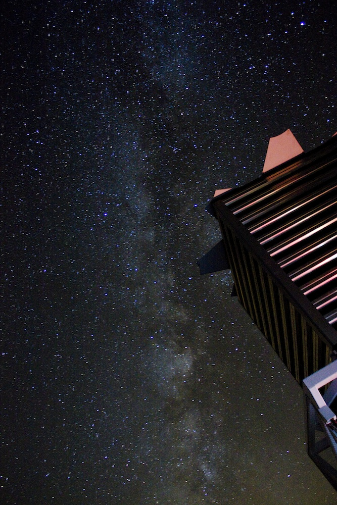

I am a graduate student at Columbia University's Department of Astronomy.
Before that, I worked for the Sloan Digital Sky Survey (SDSS) at NYU, and earned an Honors B.A. in Physics from NYU.
When I'm not doing research or writing code, I'm probably playing music, riding my bike, or cooking.